Instalação do Windows
A instalação do Windows é o processo de colocar o sistema operacional no computador. Isso pode ser necessário quando o sistema apresenta erros ou quando o computador é novo.
1. Preparar o pendrive de instalação
Baixe a ferramenta oficial no site da Microsoft.
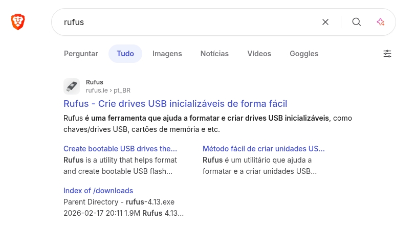
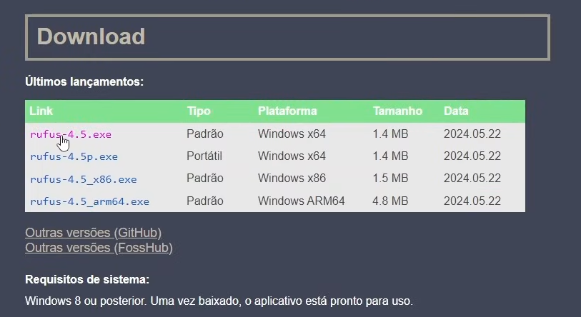
Tenha a imagem ISO do Windows 10 ou 11.
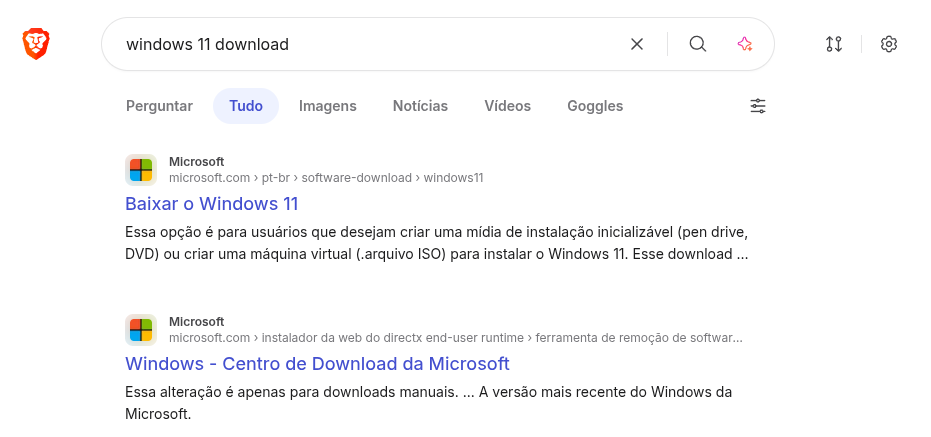
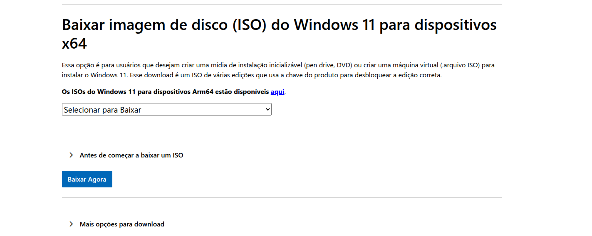
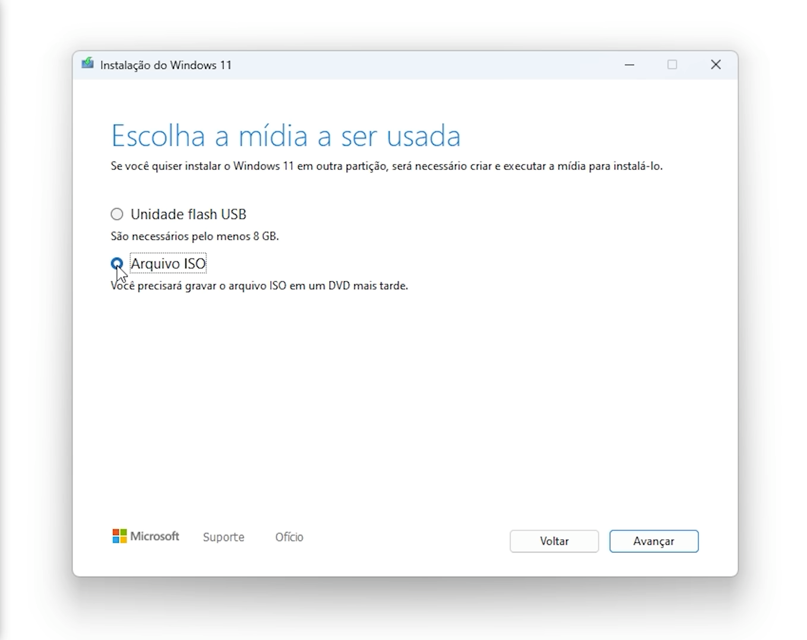
Observação: Certifique-se de ter baixado a imagem ISO correta do Windows no site oficial da Microsoft.
Insira um pendrive vazio (mínimo 8GB).
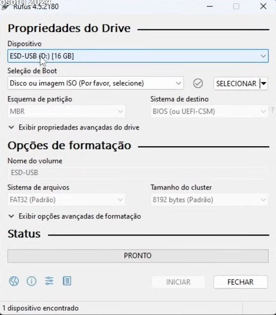
selecione o pendrive na ferramenta Rufus.
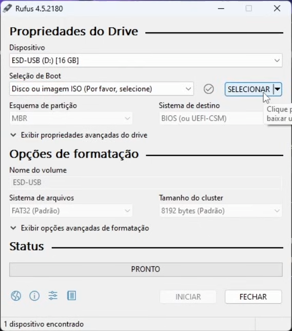
Escolha a imagem ISO do Windows.
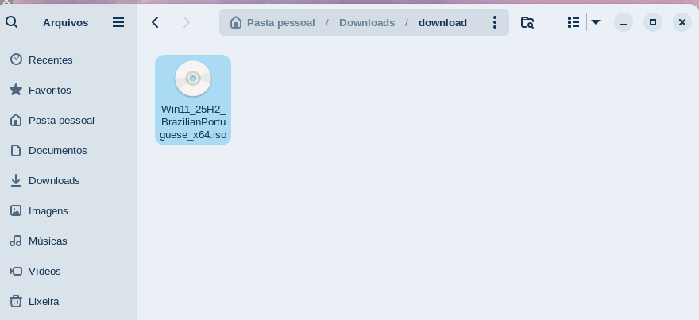
Observação: Todos os dados do pendrive serão apagados durante esse processo. Certifique-se de fazer backup dos arquivos importantes antes de continuar.
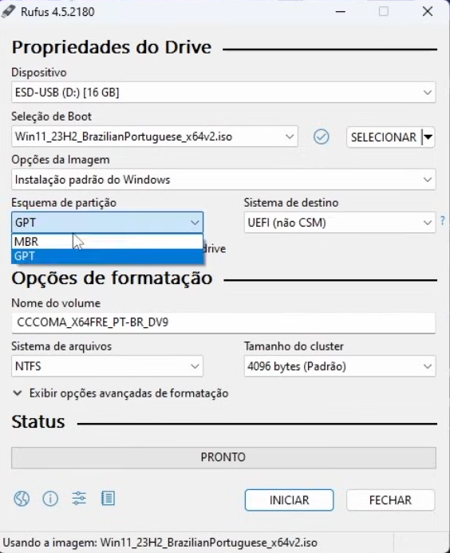
selecione o tipo de dispositivo de inicialização (MBR ou UEFI), MBR para computadores mais antigos, e UEFI para computadores mais recentes.
após configurar, clique em "Iniciar".
quando o processo terminar, o pendrive estará pronto para instalar o Windows.
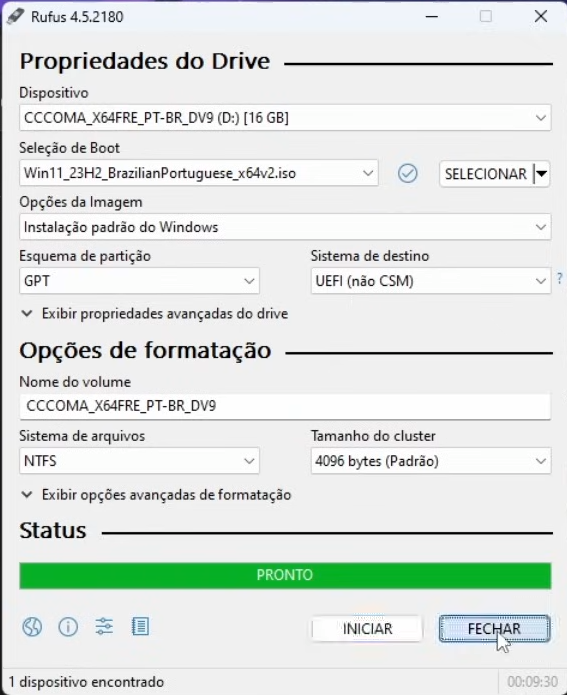
Execute a ferramenta e crie o pendrive bootável.

2. Iniciar pelo pendrive
Reinicie o computador.
Pressione a tecla de boot (F2, F12 ou DEL dependendo do modelo).
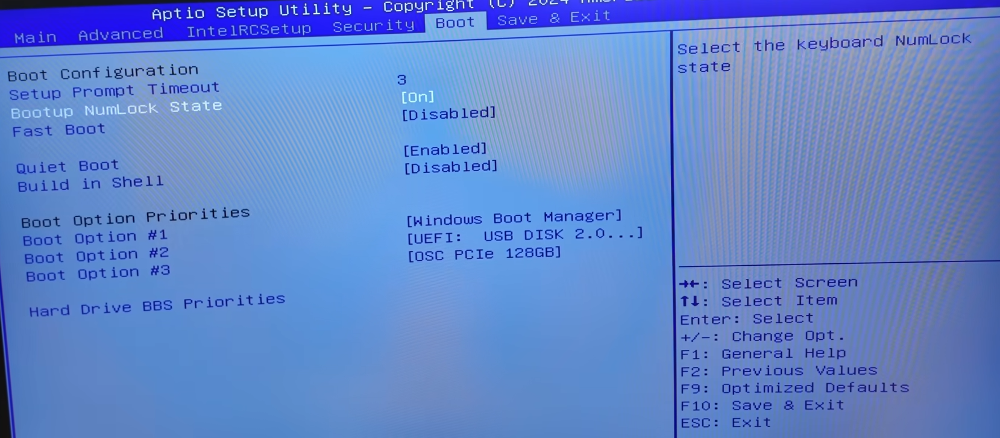
encontre a opção de inicialização (Boot Options)
Selecione o pendrive como dispositivo de inicialização.
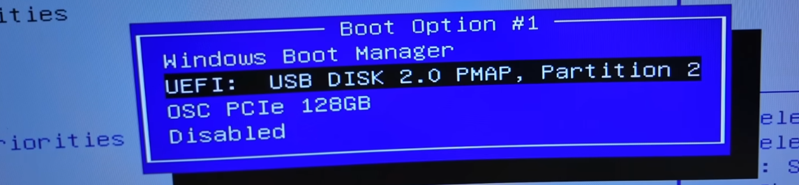
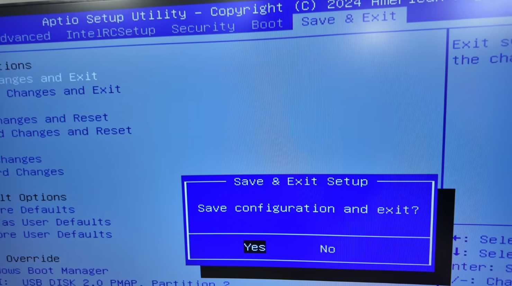
3. Instalar o Windows
Escolha o idioma e clique em "Instalar agora".
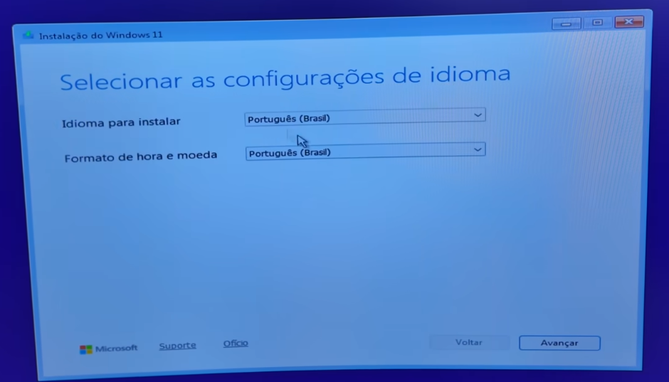Selecione a versão do Windows.
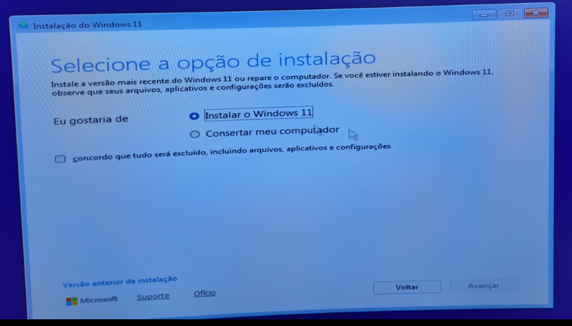
Aceite os termos de licença.
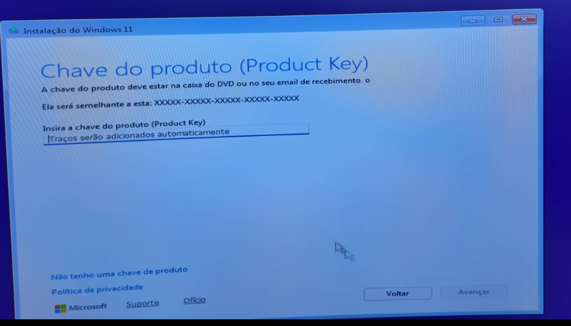
se tiver uma chave de ativação válida, selecione a opção "Inserir chave de ativação".
se não tiver uma chave de ativação, selecione a opção "Não tenho uma chave de produto".
Escolha o disco onde será instalado.
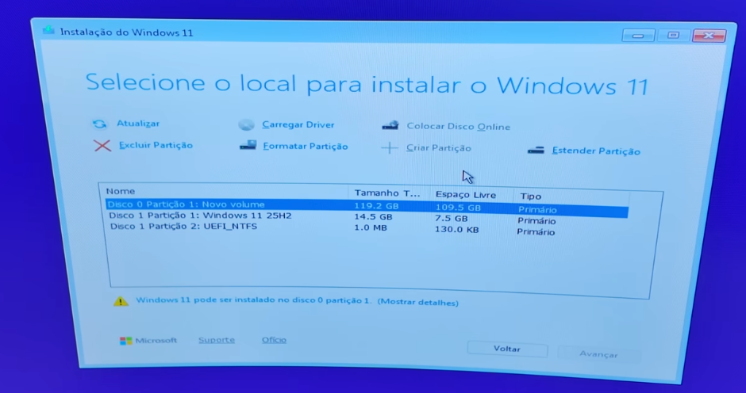
se necessário, formate o disco para garantir uma instalação limpa.
Aguarde o processo finalizar.

e pronto seu Windows estará instalado!
Cuidados Importantes
Faça backup dos seus arquivos antes de instalar.
Utilize sempre a ferramenta oficial da Microsoft.
Tenha uma chave de ativação válida.
Observação: Caso o usuário não se sinta seguro para realizar a instalação, recomenda-se procurar um profissional qualificado.